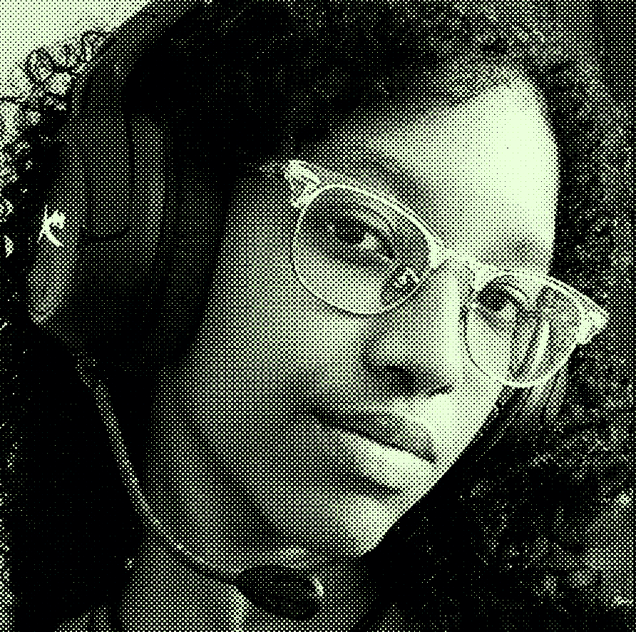

Sou natural de Teresina, Piauí e moro em Russas desde agosto de 2023 por conta da graduação que estou fazendo na UFC. Meu interesse pela área da programação surgiu no sétimo ano, quando meu professor apresentou a program- ação em blocos. Esse interesse ressurgiu no terceiro ano do ensino médio, então resolvi, por meio do SISU, entrar no curso de Engenharia de Software na Federal mais próxima da minha casa. Desde que vim pra Russas, busco fazer esportes, como a capoeira, basquete, vôlei e também me tornei mais próxima do teatro, fui integrante do projeto Clube do Improviso e participo de aulas na OFICARTE. Além do meu grande interesse e amor pela área da progra- mação, o que mais me incetiva a continuar em uma graduação longe de casa e da minha família são os meus amigos. Sinto falta da minha família, mas, felizmente, aqui em Russas eu encontrei uma nova.
